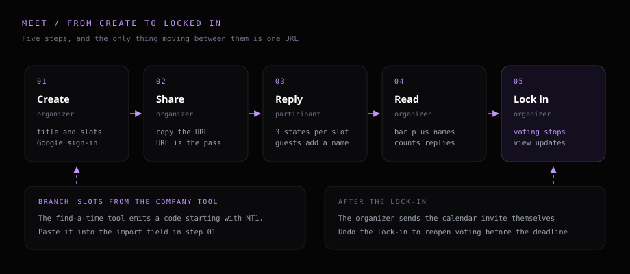
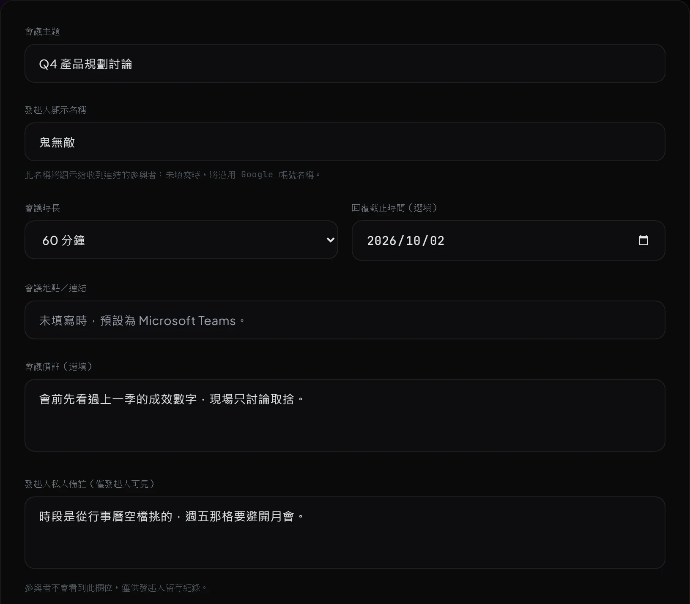
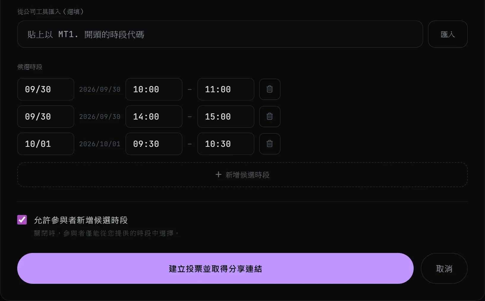
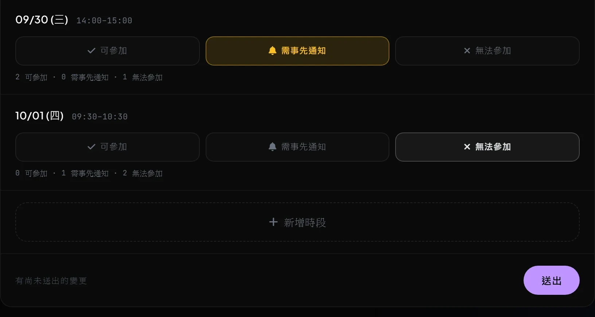
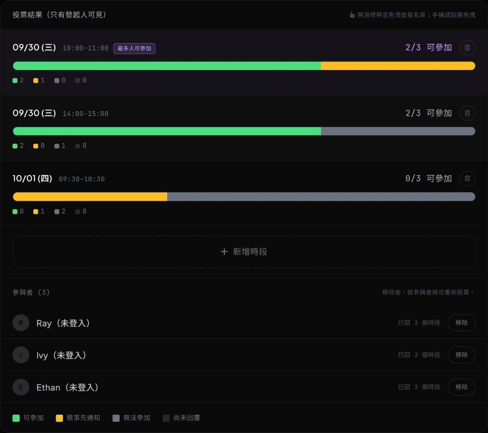

Meet is the meeting-time poll on this site, unrelated to Google Meet. The organizer creates a meeting, lists candidate slots and gets a URL. Whoever opens that URL marks each slot as available, needs notice, or unavailable. The organizer comes back to the same page, reads the result and locks one slot in. It replaces asking people one by one in a group chat.
This guide follows the order you use it in: the fields on the create form, the participant’s voting view, then the organizer’s result view and lock-in. The tool itself is here, and how it was built is written up in P31。

# Roles and permissions
Creating a meeting needs a Google account. Anyone who only replies to slots votes as a guest without signing in. The three roles compare as follows.
| Item | Organizer | Signed-in participant | Guest |
|---|---|---|---|
| Create a meeting | Yes | Yes, and becomes that meeting’s organizer | No, guests only vote |
| Vote | Excluded from the tally | Yes | Yes, a name is required before submitting |
| Propose a new slot | Yes | Yes once the organizer turns it on | Yes once the organizer turns it on |
| See other replies | Full list and counts | Counts only | Counts only |
| Coming back later | Home lists the meetings created | “Meetings I replied to” on the home page | Kept in the same browser on the same device |
A guest identity lives in that device’s browser. Reopening on the same device keeps you as the same person and lets you change an earlier reply. A different device or browser counts as a new participant and votes again. Sign in with Google to change a reply across devices.
# Organizer: create a meeting
Press “Start a new meeting” on the home page to open the form, ten fields in all. Two are required: the meeting title, and at least one candidate slot. Every other field has a default and can be skipped.


- required Meeting title Shown at the top of the participant’s view. Spell out the scope. (Pressing create with this empty keeps you on the form and shows a prompt underneath.)
- optional Organizer display name Participants recognise the organizer by this name. It pre-fills with the name you used last time, 40 characters maximum.
- pick one Meeting length 30 minutes / 60 minutes / 90 minutes / half a day (4 hours). Once picked, every row’s end time is recalculated. (Pick the length before laying out slots; in the other order, end times you already typed get recalculated over.)
- optional Reply deadline Voting stops at 23:59 on the date you set, in the time zone the meeting was created in. (After the deadline the participant view says the voting deadline has passed and the three buttons are disabled.)
-
default
Place or link Left empty, it fills in
Microsoft Teams. Overwrite it for a physical room. - optional Meeting note Shown under the title in the participant’s view, for scope or a time limit, for example “this one covers the Q2 budget only, forty minutes”.
- organizer only Organizer’s private note Visible to the organizer alone; the participant view leaves it out.
- optional Import from the company tool Paste a slot code produced on the company side to bring a batch of candidate slots in. (Steps are in “Bringing slots in from the company tool”; that section ends with the current verification status.)
- on by default Let participants add candidate slots On, participants can propose new slots. Off, they choose from the existing ones.
- required Candidate slots At least one row. The form opens with tomorrow at 10:00 and 14:00 already filled in; press “Add candidate slot” to append more. (The three rows in the screenshot are sample data; the input format is in the next section.)
What the slot fields accept
Date and time are plain text fields. Type or paste the whole string; tidying it into a fixed format first is unnecessary. These are the spellings it accepts.
Time 9 → 09:00 930 → 09:30 1400 → 14:00 12. → 12:00
Date 0930 or 9/30 means this year; a date already past rolls to next year
20260930, 2026-09-30, 2026年9月30日 and 26/9/30 all parseFour more things happen automatically:
- automatic Full-width to half-width Full-width digits and full-width colons convert to half-width.
-
display
The date field shows
MM/DDThe full year-month-day sits in small type to the right of the same row. - keyboard Whole-field selection Clicking into a field selects the whole string, so typing overwrites it. Left and right arrows move to the neighbouring field, and a row can be filled with the keyboard alone.
- automatic A new row follows the previous one A new row reuses the previous row’s date, and its start time picks up where the previous row ended. Consecutive slots on one day need no editing.
Bringing slots in from the company tool
Verified end to end (2026-09-29).The slot code format was agreed on 2026-09-24 and both sides implemented it. On 2026-09-29 the whole path ran once: the company side produced a code carrying four slots, it was pasted into this form and imported, and all four rows came back with the right dates and start and end times.
After comparing calendars in Outlook on the company machine, the free slots it finds come into this form in one batch, which saves copying them across by hand. Five steps:
-
company side
Tick the slots to send in the find-a-time result list and press “Generate slot code” to get a string that starts with
MT1.. - company side Copy the whole string. (The two sides share no connection; the clipboard is the only channel, and an incomplete copy fails verification.)
- Meet side Back on the create form, paste it into the “Import from the company tool” field.
- Meet side Press “Import”. The candidate slots are replaced by the rows in the code. (Rows typed by hand get overwritten, so note them down first to keep them.)
- Meet side Imported rows behave like typed rows; dates and times stay editable.
One code carries at most 20 slots, and anything beyond that stays out. When verification fails, the reason appears under the field:
- It does not start with
MT1.(the clipboard holds something else) - The code is incomplete or was altered (usually a partial copy; copy it again on the company side)
- The contents will not parse (the code is damaged; generate it again on the company side)
- The code carries no slots (nothing was ticked when it was generated)
A slot code carries the times alone. Attendees, the subject and the free/busy detail stay on the company machine. What reaches the public site is a handful of dates and times.
Creating takes you straight to that meeting’s URL. Press “Copy share link” in the top right to get the link.
# Participant: reply to a meeting
A participant clicks once per slot and is done, around thirty seconds in all. Opening the URL lands on the entry screen: the meeting name and organizer on top, two options below, sign in with Google or vote as a guest. Guests register nothing.

- Guest Fill in a display name first The default “Guest + the first four characters of the identity id” will not submit; the screen asks for a name so the organizer can tell who replied. (Signed-in people get their account name and can leave this alone.)
- everyone One of three per slot Available, needs notice, unavailable. The counts sit under the buttons; the names are visible to the organizer alone.
- everyone Press “Submit reply” Replying to some of the slots is fine; “You have replied to N of M slots” is a prompt. (After submitting, the button becomes “Update my reply” and changes are allowed any time.)
- when the organizer allows it Propose a new slot “Add a slot” sits under the slot list. A proposed slot is labelled with who proposed it, and the proposer can delete it. (Hidden when the organizer turns “Let participants add candidate slots” off.)
- when the buttons do nothing The three buttons are disabled The deadline has passed, the organizer has locked a slot in, or the meeting has ended. The screen states the actual reason.
# Organizer: read the result, lock it in, wrap up
Opening the same URL as the organizer adds a “Results” section that participants never see. Read it by the length of each slot’s green block.

- read The bar Hovering a block shows the names; on a phone, tap the block. The numbers under the blocks are the head counts per state.
-
read
The
2/3 availableon the right means two of the three people who replied can attend. The denominator counts replies alone, so it says nothing about how many have yet to answer. - read The “most available” marker Sits automatically on the slot with the highest count. (On a tie, the slot with fewer “needs notice” wins.)
- action Lock this slot in Pressing it stops the voting, and the participant view says the organizer has locked a slot in and a calendar invite follows separately. (“Undo lock-in” reopens voting while the deadline still holds.)
- action Remove a participant Each row in the list has a remove button on the right. After removal that person can reopen the link and vote again while the meeting still takes votes.
- action Delete the whole meeting The bin icon on that row of the home page, with a confirmation first. The meeting and every reply go together and one slot of the quota comes back. (No undo; anyone holding the link sees that the poll has been removed.)
- read “Currently leading” on the home page Shows each meeting’s highest-scoring slot, and switches to the locked-in slot once one is chosen.
What needs no action, and what you handle yourself
These are the questions that come up most, listed up front.
- not needed Registering an account Voting works with a guest identity. A Google account is needed to create a meeting.
- not needed Installing anything It is all web pages; a phone browser opens the URL and votes.
- not needed Waiting for everyone The denominator is the number of replies, so a slot can be locked in as soon as the count is enough.
- handle yourself Calendar invites Locking a slot in marks the conclusion on the page. Meet writes to nobody’s calendar.
- handle yourself Notifications and nudges Meet holds no invitee list and no email addresses, so it sends no reminders. Nudge in whichever group chat the link went to.
# Five limits to know before you use it
- Ten meetings at a time. The eleventh is blocked, and deleting a finished meeting releases a slot. This ceiling keeps the whole tool inside the free tier.
- The organizer stays out of the tally. The slots the organizer lists already say when they are free, so the bar leaves their vote out. Add it back when you read the bar.
- The number of people still to reply stays unknown. Meet has no idea who the link went to, so it cannot work out how many votes are missing. Nudge against the participant list, which shows who has already replied.
- The list shows names only. Participant records carry no email address; what shows is the name each person typed. Ask for full names when you send the link.
- Anyone holding the URL can vote, so keep it off public pages. The URL carries a 20-character id that is hard to guess, which makes it safe enough to pass around a group chat. A leaked URL splits into two layers. Privacy holds: the votes and the full list stay readable by the organizer alone, each participant reads only their own vote, and that limit lives in the database rather than in what the screen draws. The tally loosens: anyone holding the URL can vote, which costs the count its credibility.
# Related links
- • Meet — open the tool
- • P31 — how this tool was built
- • P30 — Idea Whiteboard, the first tool on the same setup
- • GitHub — GHOST8787/blog
For a question or a feature idea, leave a note on the Whiteboard , or open an issue on GitHub.